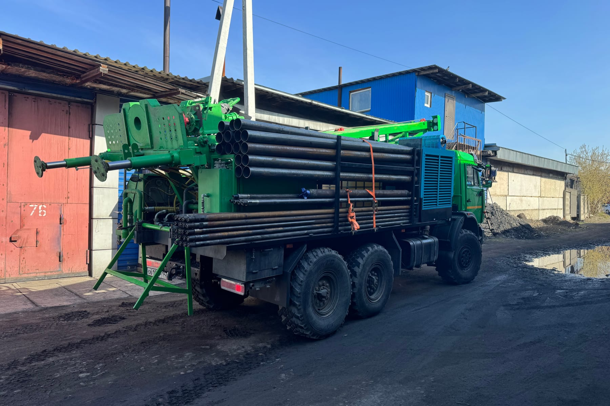

Обустройство скважины: что превращает трубу в водопровод
Пробуренная скважина — ещё не водоснабжение. Проходим путь воды от забоя до крана и перечисляем узлы на каждом участке: оголовок, кессон или адаптер, насос, гидроаккумулятор, автоматика, разводка.
Пробуренная скважина — это, по сути, труба в земле с водой на дне. До водопровода в доме ей ещё далеко: между забоем скважины и краном на кухне стоит отдельный комплекс оборудования, о котором заказчики обычно узнают уже после бурения. Проходим этот путь по порядку — от устья скважины до ввода в дом — и перечисляем, что стоит на каждом участке.

Бурение закончилось — дальше эту трубу в земле предстоит превратить в водопроводГерметичный оголовок — первый узел на пути
Сразу после бурения устье скважины должно быть защищено — это не опция, а требование к самой конструкции. По СП 31.13330.2021 (п. 8.10) конструкция оголовка скважины должна обеспечивать полную герметизацию, исключающую проникание поверхностной воды и загрязнений в межтрубное и затрубное пространство. Речь именно о своде правил, который регулирует проектирование систем водоснабжения поселений и производственных объектов — для бытовой скважины это не прямая юридическая обязанность, а признанный отраслевой стандарт, которому имеет смысл следовать при любом статусе объекта: смысл требования (не пускать грязь и поверхностные стоки внутрь ствола) одинаков что для городского водозабора, что для скважины на дачном участке.
Практический смысл этого узла прост: пока постоянная обвязка не готова, а иногда и годами после неё, именно герметичность оголовка не даёт скважине превратиться в канал, по которому в водоносный горизонт стекает всё, что попадает на поверхность рядом.
Санитарные требования к источникам нецентрализованного водоснабжения дают ту же логику с другой стороны: надземная часть водозаборного сооружения должна иметь укрытие для предотвращения загрязнения воды водоисточника (СанПиН 2.1.3684-21, п. 87). Прямая формулировка этого пункта рассчитана на каптажные сооружения и колодцы общего пользования, но смысл требования универсален и для скважины на частном участке: устье, оставленное открытым — без крышки, без отмостки, без защиты от дождевой и талой воды, — это самое слабое место всей системы, вне зависимости от того, по какому именно документу оценивать риск.
Кессон или адаптер — развилка в самом начале
Дальше нужно решить, как именно скважина будет соединяться с системой водоснабжения дома — и здесь расходятся два решения. Кессон — герметичная камера вокруг устья скважины, заглублённая ниже уровня промерзания грунта, в которой размещается оголовок, а иногда и часть автоматики; в неё можно спуститься для обслуживания. Скважинный адаптер — гораздо более компактное решение: узел, который выводит воду в сторону через боковой отвод обсадной трубы ниже глубины промерзания, без отдельной камеры на поверхности.
У каждого варианта свои условия применимости — по уровню грунтовых вод, глубине промерзания и тому, нужен ли вообще доступ к оголовку для обслуживания. Кессон даёт больше пространства — туда помещается не только оголовок, но иногда и часть автоматики, — и позволяет спокойно обслуживать узел даже зимой, не раскапывая участок. Адаптер компактнее и дешевле по земляным работам, но обслуживать его сложнее: доступ к месту врезки на глубине без демонтажа обсадной трубы ограничен. Это самостоятельное инженерное решение, а не вопрос вкуса, и подробно оно разобрано в отдельной статье: кессон или скважинный адаптер.
Насос, гидроаккумулятор, автоматика
Дальше в дело идёт непосредственно оборудование, которое поднимает воду и поддерживает давление в системе.
Насос. Подбирается под глубину скважины и её дебит — тот самый показатель, который замеряют на этапе прокачки после бурения. Мощнее не значит лучше: насос, рассчитанный на больший расход, чем реально способна дать скважина, будет уходить в сухой ход и вырабатывать ресурс быстрее, а не работать эффективнее.
Гидроаккумулятор. Мембранный бак, который держит запас воды под давлением и сглаживает работу насоса — без него насос включался бы при каждом открытии крана, что резко сокращает срок его службы. Ёмкость бака подбирается под потребление дома, а не берётся «с запасом на всякий случай».
Автоматика. Реле давления, которое включает и выключает насос по мере расхода воды, и датчик сухого хода, который защищает насос, если уровень в скважине временно опустился ниже приёмного клапана. Это тот узел, экономия на котором чаще всего аукается дороже сэкономленного — сгоревший из-за сухого хода насос стоит куда больше датчика, который должен был его остановить.
Эти три узла работают как единая система: без гидроаккумулятора насос переключается слишком часто и изнашивается, без нормально настроенной автоматики он либо не защищён от сухого хода, либо давление в доме скачет при каждом открытии крана. Экономия на одном из трёх элементов обычно означает не меньшие расходы в целом, а более быструю замену другого — чаще всего самого насоса, который стоит дороже автоматики и гидроаккумулятора вместе взятых.
Подробный разбор того, как именно подбирать насос по паре «глубина — дебит», — отдельная тема: как подобрать насос для скважины.
Разводка по дому и ввод
Финальный участок пути — труба от скважины (или от кессона/адаптера) до дома и разводка внутри по точкам водоразбора: кухня, санузел, полив, при необходимости — отдельная линия для летнего полива, которую можно не заглублять на полную глубину. Ввод в дом должен пройти ниже глубины промерзания грунта — так же, как и вся наружная часть трубопровода, — иначе система рискует перемерзать каждую зиму. Это тот момент, где кессон или адаптер снова оказываются в центре решения: именно от глубины их установки и зависит, на какой отметке пройдёт труба, чтобы не мёрзнуть.
Точная глубина заложения трубы под конкретным участком зависит от местных грунтов и рассчитывается индивидуально, а не берётся по общей табличной цифре «для региона» — она может заметно отличаться даже в пределах одного района в зависимости от состава грунта и его влажности. На этом же участке пути обычно предусматривают утепление трубы в месте ввода и, если позволяет бюджет, электрический кабель обогрева на случай аномально холодной зимы — это дешевле, чем размораживать перемёрзший участок трубопровода посреди зимы.
Что можно сделать позже, а что сразу
Не всё в этом списке требует одинаковой срочности. Герметичный оголовок нужен сразу после завершения бурения — оставлять устье незащищённым даже на несколько недель означает рисковать чистотой воды в горизонте, который скважина только что вскрыла. Кессон или адаптер логично делать следующим шагом, пока техника ещё может работать на участке, — переносить земляные работы на потом обычно дороже, чем делать их одним заездом.
А вот часть автоматики и чистовую разводку по дому иногда откладывают до момента, когда определены точки водоразбора внутри — если дом ещё строится, разводку логично увязать со строительными работами, а не тянуть трубы «в никуда» заранее. Насос и минимальный комплект автоматики при этом обычно ставят сразу: без них проверить, как скважина ведёт себя в реальной эксплуатации, попросту нечем — а именно первые недели и месяцы работы обычно показывают, устраивает ли реальный дебит и напор.
Лабораторный анализ воды формально можно отложить на любой срок, но откладывать его надолго не стоит: он даёт отправную точку, с которой потом сравнивают состояние воды через год-два эксплуатации. Без исходных данных о составе воды сразу после освоения скважины сложно понять, ухудшилось ли что-то со временем или вода такая с самого начала — а от этого зависит, стоит ли вообще беспокоиться при появлении осадка или привкуса.
На насосное оборудование при заказе через компанию действует скидка 20%, а монтаж насоса — бесплатно; это одна из немногих вещей в обустройстве, которая не зависит от геологии участка и известна заранее.
Что из перечисленного уже включено в услугу «под ключ», а что считается отдельно, — сверяется с составом конкретного предложения; общий разбор состава такой услуги — в статье что входит в бурение под ключ. А если обвязку уже сделали, но что-то в ней подводит зимой — читайте что делать, если скважина перемёрзла и про обсадную трубу для скважины, где разбирается конструкция, от которой отталкивается вся дальнейшая обвязка.
Спланировать обустройство вместе с самим бурением проще, чем достраивать его потом по частям, — обсудить это для своего участка можно на странице бурения скважины на воду.